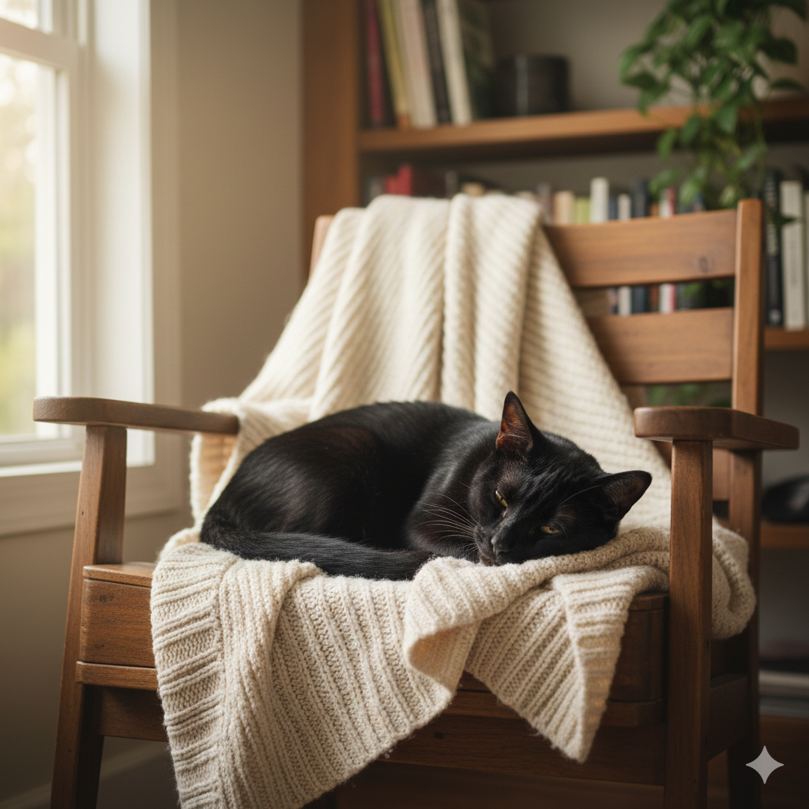
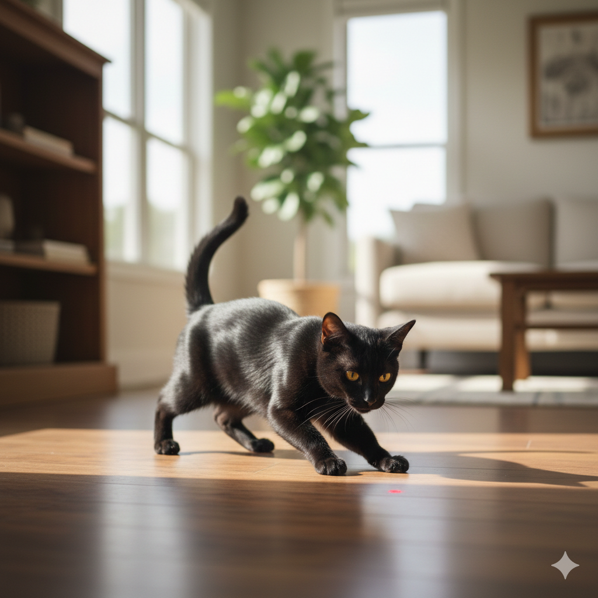
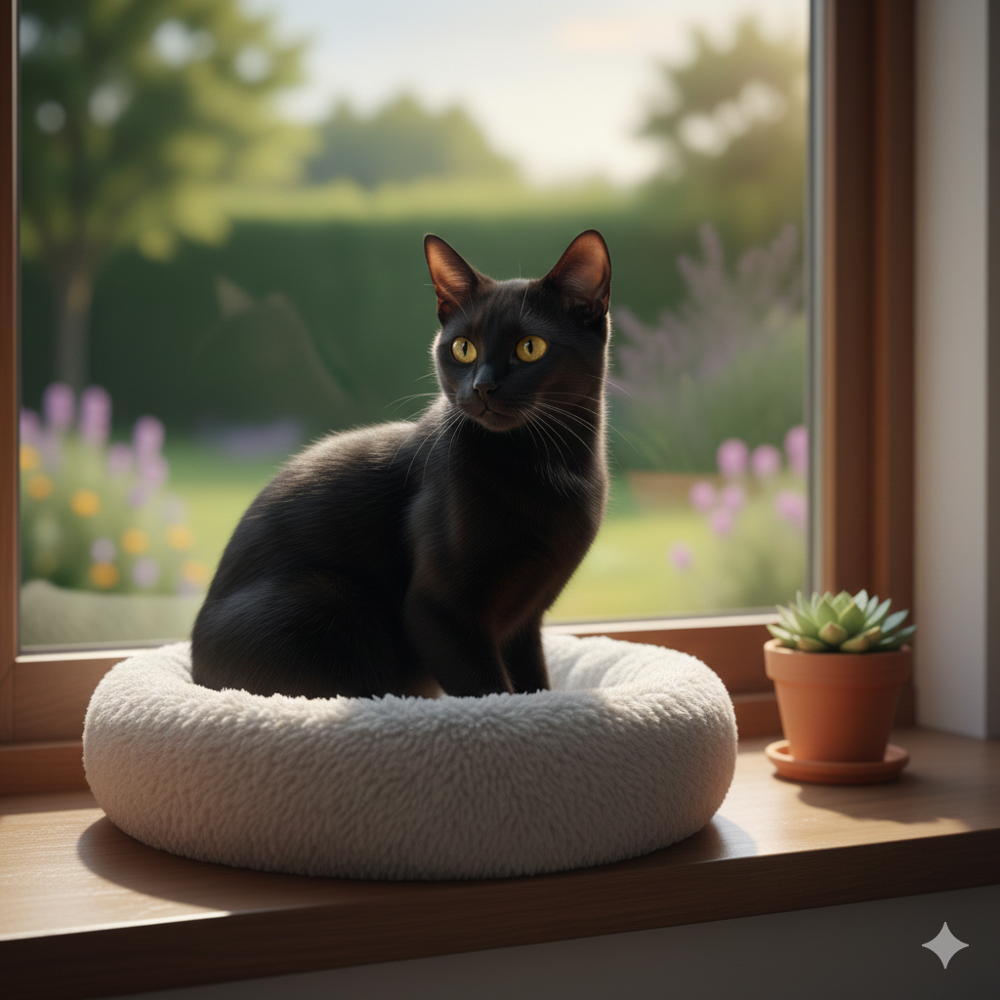

Rodrigo
Descripción
Rodrigo es un gato bombay de 1 año de edad. Lo rescatamos de un refugio local clandestino, donde no otorgaban los cuidados vitales que se deben ofrecer a cualquier animal.
Personalidad
Es un gato muy cariñoso y juguetón, le encanta estar en compañía de personas y otros gatos. Tiene un pelaje suave y brillante de color negro, y unos ojos amarillos muy expresivos.
Información médica
Rodrigo está vacunado, desparasitado y esterilizado. Además, cuenta con un historial médico completo y ha sido revisado por nuestro veterinario de confianza.
Información Adicional
Buscamos un hogar amoroso y responsable para Rodrigo, donde pueda recibir el cariño y la atención que merece. Si estás interesado en adoptarlo, por favor completa nuestro formulario de adopción y nos pondremos en contacto contigo.